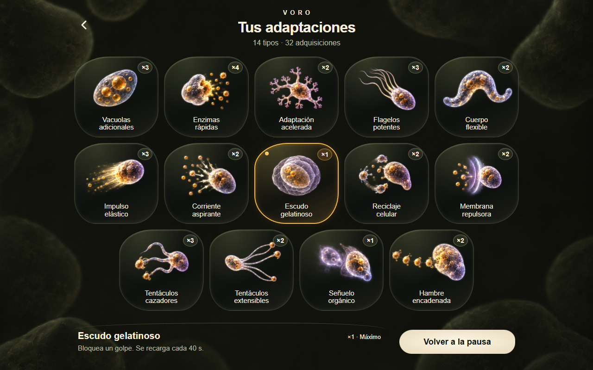

Tus adaptaciones · D3
La opción elegida, implementada. Capturas de una partida de prueba con 14 tipos y 32 adquisiciones. Solo aparecen las que posees en tu partida.
Abrir el juego · Pausa → Tus adaptaciones
Implementación real · escritorio
Pruebas de interfaz en navegador; esta pantalla aún no se ha enviado a TestFlight.